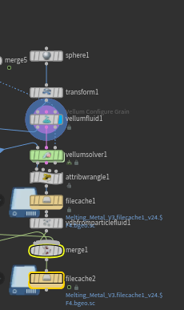
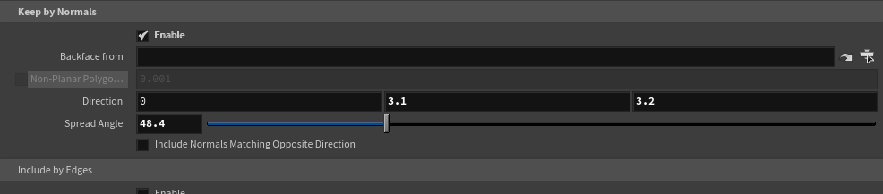
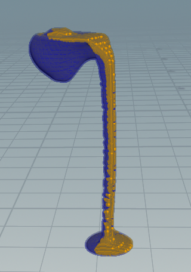

Bomin Kim (Fx)
Caleb Stovall (3D/2D)
Mojie Tang (Fx)
Sydney Relkin (Comp)
Yiqi Zheng (Fx)
SCAD X HARBOR - Week 3
Hello, this is my third week of the Scad x Harbor blog!
Feedback From Mentors:
Vi:
Color: Cool tone
Last shot?
Hailey:
Reference: OK
Last shot?
Blue tone: OK
Allie:
Background: Ensure consistency throughout
Billy:
Send a reference
Kyle: Why 1A/B/C?
Don't want the guy's face
Not pulled up; focus on close-ups
Shot 4A: Make sure it's consistent
Last shot: No hands needed
Olivia:
Consider transitions/products
Last shot: No hands needed
Guest Yong Duk Jhun:
Think about why someone would buy the watch
How will it make them feel?
After discussion, we decided to change the last shot from closing the watch case to opening it, symbolizing a welcome to customers to buy it. We also have a transition from rotating gears to the watch. Regarding Guest Yong Duk Jhun's advice, after careful discussion and consideration of the timeline, we feel it may not be feasible to implement this suggestion at this stage.
Nail the previs:
Molten Platinum
Previous:
I used Vellum to create particles and then used the vdbfromparticlefluid node to directly convert the particles into fluid. However, the result appears jagged and uneven along the edges, and the simulation runs slowly.

Motified:
I used another method. I used VDB conversion and VDB smoothing, allowing more detailed control over the fluid surface's smoothness and fine details. This method also ensures clean and detailed geometry, reducing jagged edges or irregular faces.
Smoke:
Smoke: Also, I used Pyro to add some smoke when the molten platinum was poured. I also selected the surface based on the normal attribute and adjusted the direction in the group node.


Test:
This is a simple test of molten platinum pouring with smoke.
This one uses Karma XPU render with different heights and environments.
This render test matches the camera, making it easy to composite in the future. It includes fluid and smoke simulations, and I’ve assigned the material to represent molten platinum.
The shot's design, combining molten platinum and smoke, creates a visually striking and cohesive scene. The gray molten platinum was chosen to match the overall cool-toned color palette, while the addition of smoke helps create an industrial atmosphere. The molten platinum, with its metallic texture and dynamic flow, symbolizes precision and high-end craftsmanship, while the smoke adds depth and atmosphere, emphasizing the high-temperature environment. They are combined to create a more visually impactful experience.